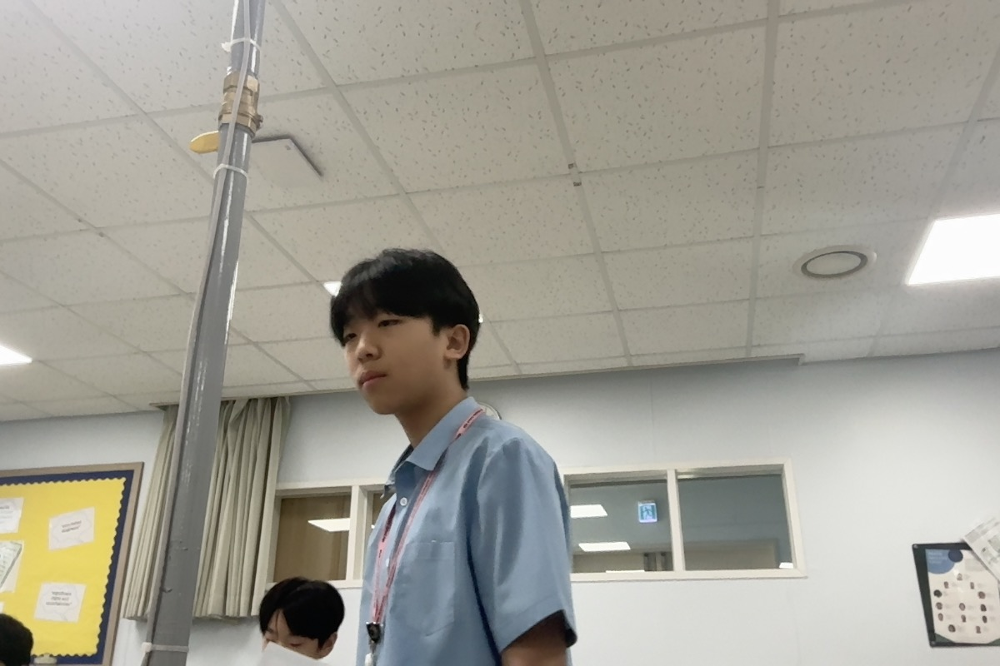

Welcome to Our STEM Project!
Clean water is an essential factor for organisms to survive. Water consists of approximately 60% of our body, acting as a universal solvent to execute chemical reactions and dissolve nutrients, a fluid that regulates bodily temperature and acidity, transports nutrients, excrete wastes, lubricates mucous membranes, and cushion our internal organs. Dehydration or consumption of unfiltered water may lead to contamination and malfunction of vital organs, leading to illnesses such as; cholera, diarrhea, dysentery, hepatitis A, typhoid, polio, and even death. Our project’s most foremost criteria is to identify what material can filter this fluid the best.
 Ted Koh Jungwoo Sim
Jungwoo Sim
 Jeremy Lee
Jeremy Lee